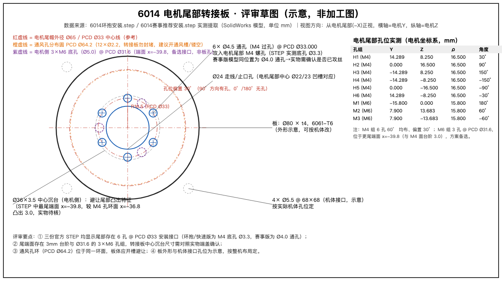

会议信息
会议日期：____年__月__日
地点 / 线上：__________
记录人：__________
参会人：__________ / __________ / __________ / __________
一、背景与争议点核查
| # | 争议点 | 提出人观点 | STEP 模型核查结论 |
|---|---|---|---|
| 1 | 电机尾部无螺丝孔，无法固定 | "6014 屁股后面没有螺丝孔" | 不成立 三份官方 STEP 均显示尾部 6 孔 @ PCD Ø33（环抱/快速版为 M4 底孔 Ø3.3，赛事版为 Ø4.0 通孔） |
| 2 | 环抱安装 3D 打印强度不够 | "打印件支撑不了" | 成立但可规避 官方抱箍为机加件构型；改用尾部孔 + 铝转接板即可绕开 |
| 3 | 6014 只能给机器狗用 | "专用件" | 不成立 尾部孔群即通用安装接口，赛事方案还用它做双电机串联 |
二、STEP 实测关键数据（评审依据）
- 主安装接口：6×M4（底孔 Ø3.3）@ PCD Ø33.000，60° 均布、偏置 30°（90° 方向有孔，0°/180° 无孔），端面 x=-36.8
- 备选接口：3×M6（底孔 Ø5.0）@ PCD Ø31.6，端面 x=-39.8（与 M4 面台阶 3.0mm）
- 同环面通风孔：12×Ø2.2 @ PCD Ø64.2（转接板须开通风槽/镂空）
- 中心：Ø22/23 凹槽（对应转接板 Ø24 走线孔）；尾帽外径 Ø65

转接板示意：Ø80 × t4 6061-T6，6×Ø4.5 通孔 @ PCD Ø33，中心 Ø24 走线孔 + Ø36×3.5 沉台，4×Ø5.5 @ 68×68 机体接口（示意）。点击图查看 SVG 原图。
三、实物待确认项（现场逐项核实）
| # | 待确认项 | 确认方法 | 结果 | 确认人 |
|---|---|---|---|---|
| 1 | 尾部 6 孔是否已攻丝 M4（还是 Ø4.0 光孔） | 实物试拧 M4 螺钉 / 卡尺测孔径（Ø3.3=底孔，Ø4.0=通孔） | ☐ 已攻丝 ☐ 光孔 | |
| 2 | 尾端面台阶实际高度（模型为 3.0mm）与凸台外径 | 深度尺 / 卡尺 | ____mm / Ø____mm | |
| 3 | 实物版本与模型批次是否一致（"IM6014最新"） | 核对电机铭牌 / 采购批次 | ☐ 一致 ☐ 不一致 | |
| 4 | 通风孔实际位置与数量 | 对照 PCD Ø64.2 目视 | ☐ 一致 ☐ 不一致 | |
| 5 | 中心凹槽是否需走线（驱动板出线方式） | 看实物线束走向 | ☐ 需要 ☐ 不需要 |
四、评审结论
☐ 通过：按转接板方案出加工图（6061-T6，Ø80×t4，6×Ø4.5 @ PCD Ø33）
☐ 有条件通过：先完成第三节确认项，再出图（责任人：______）
☐ 驳回，改走：☐ 铝 CNC 抱箍 ☐ 官方钢箍快拆 ☐ 其他：__________
五、行动项
| # | 事项 | 责任人 | 截止 | 状态 |
|---|---|---|---|---|
| 1 | 实物核实尾部孔 / 台阶并回填第三节 | |||
| 2 | 按确认结果出转接板加工图（DXF 已备好） | |||
| 3 | 确定机体侧接口孔位（替换示意 4×Ø5.5） | |||
| 4 | 打样与装机验证 |
六、签字
机械：__________
整机：__________
负责人：__________
提示：本页可直接 Ctrl/Cmd+P 打印为评审记录纸质档 · Markdown 源文件